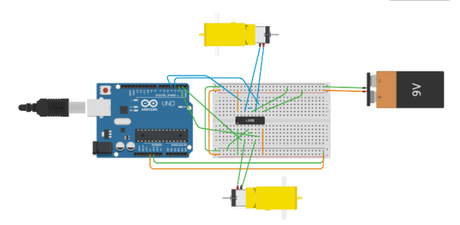
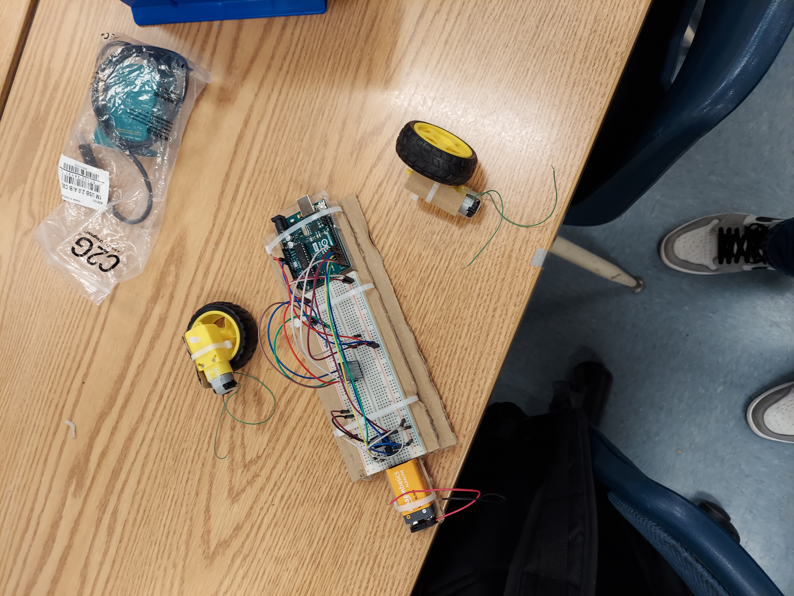
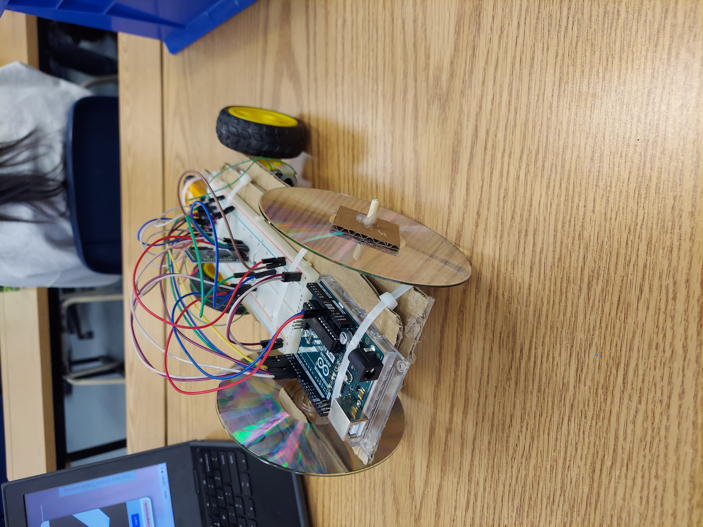
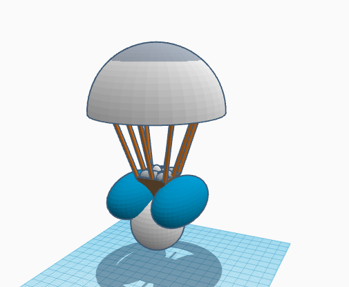

This week we learned about chemical engineering and we started working on our car projects. Learning about chemical engineering wasn't as interesting as the other fields of engineering but I did learn about what they did. I didnt know how important they were in the oil industry. For my car project I chose to make a arduino car because I thought it was more interesting. I want to learn how to code the car because it looks fun and I might buy and build one myself for fun.


We started working on our car projects this week and so far we have just been CADing and planning how we are building our cars. Since I am making the arduino car, I have to CAD the circuit which has been difficult. Next week, I need to start designing how my car will look like but I think it will probaly be pretty basic with the motors in the back and have a short wheel base to make it nimble.

Last week I worked on my arduino car project. I was working on the wiring of my car and looking to finalize that this week. I got everything connected and just have to check it. I also connected the motors after having to solder the wires on. I also finished coding but I havent been able to test it yet. My goal for this week is to get my wiring finalized and test my controls to see if bluetooth works. Over the weeknd I got a new LEGO set, the Speed Champions Mercedes set.


This week I worked alittle bit on my code but abandoned it for later. I started working on the actual car part and put my breadboard, arduino, and battery on cardboard. I just need to put on the wheels and motors now then I will go back to coding. I decided to do my code later because it was more complicated and I can dumb it down if it doesnt end of working. Other then getting my code to actually work, I dont think there is much else I can do to improve my car.

My car was a regular RC car that was suppose to be controlled from bluetooth by my phone but I wasn't able to do that so I just used a wired control. During the test, it didn't work very well. I had to change the connections of some wires prior to testing which created some unexpected errors that I could fix. Sometimes the wheels had trouble moving because of lack of torque. The car didn't turn very well, this was because of my cars overall design and my wheels were
starting to come off. If I were to redo the car I would make a two wheel design that would make turning way easier.

Our new project is a egg drop. We will drop an egg from 3 stories and our goal is to prevent it from shattering. To do this we are given different materials to build something to do this. We will frist CAD the design, make a BOM, then actually build it. My teams approach is to put the egg in a cone coushined with cotton balls with balloons on the bottom of the cone and a parachute made from a trashbag. I think that our device is coushined enough so that our egg wont shatter. What I'm scared of is our device falling the wrong way. The weakest part of our design is the parachute because I don't think it will help slow down the drop but it might help to keep our device falling straight down. 
My egg drop was successful. It survived the drop but it cracked when we tried to take it out. The device didn't work perfectly though. The parachute didn't work great and it landed upsided down. Based on how it fell I'm surprised our egg didn't crack.
For spring break I think I'm going to Palm Springs. I will probaly go out with my friends also but we haven't decieded anything yet.